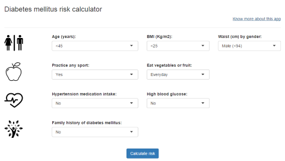

As of 2014, an estimated 387 million people have diabetes worldwide, with type 2 diabetes making up about 90% of the cases. This represents 8.3% of the adult population, with equal rates in both women and men. Information from several clinical trials strongly supports the idea that type 2 diabetes is preventable.
So, start to know your risk score

Published on: https://paulorochasa.shinyapps.io/DiabetesRiskCalc/